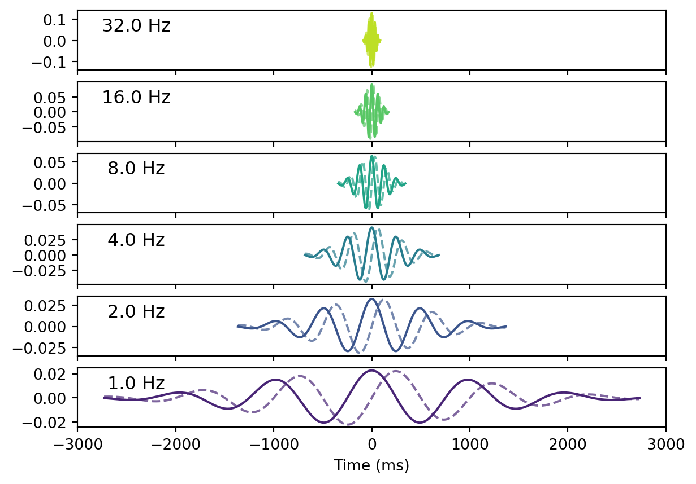

import numpy as np
import matplotlib.pyplot as plt
import meeglet
from meeglet import define_frequencies, define_wavelets
bw_oct = 0.5 # half an octave of standard deviation around center frequency
delta_oct = 1 # one octave spacing between frequencies of interest (foi)
foi, sigma_time, sigma_freq, bw_oct, qt = define_frequencies(
foi_start=1, foi_end=32, delta_oct=delta_oct, bw_oct=bw_oct
)Onboarding
Morlet wavelets designed for power-spectral analysis of M/EEG
Analysis of M/EEG signals in the frequency domain is widely used and has proven useful in various applications. This is due to a key contribution of periodic processes to electrophysiological signals, which are well represented in the frequency domain. Electrophysiological signals (as many other naturally occurring signals) show a log-frequency behavior, i.e., the magnitude and spectral width of oscillatory signals scale logarithmically rather than linearly with frequency (Buzsáki and Mizuseki 2014). The commonly used Fourier transform is optimal for signals with a linear frequency behavior. Frequency transformations that account for log-frequency behavior may be better suited for electrophysiological signals. Morlet wavelets (Morlet et al. 1982) that extend Gabor Wavelets (Gabor 1946) into families of wavelets are widely used for time-frequency analyses in M/EEG (Tallon-Baudry et al. 1996), can be used to this end.
This package provides a lean implementation of Morlet wavelets using a frequency-domain parametrization initially developed to facilitate the spectral analysis of M/EEG resting-state signals (Hipp et al. 2012). The package derives besides spectral power also the covariance matrix and several other bi-variate and summary measures (coherence, imaginary coherence, phase-locking value, phase-lag index, de-biased weighted phase-lag index, power correlations, orthogonalized power correlations) and the global interaction measure. These representations can be used for exploration and for further statistical analyses of M/EEG signals (e.g. for cluster permutation statistics or as features for machine learning).
Power spectral density in units of µV²/oct
The implementation provides the power spectrum in units of \(µV^2/oct\). While this is an unusual normalization for power spectral density, it is a logical continuation embracing the logarithmic nature of electrophysiological signals and Jean Morlet’s work extending Gabor wavelets (Gabor 1946) into families of proportionial wavelets (Morlet et al. 1982). It automatically leads to larger values at higher frequencies compared to the traditional \(µV^2/Hz\) normalization, thereby accounting for lower amplitudes at higher frequencies.
We therefore use a log-frequency grid with a wavelet design that increases spectral smoothing log-linearly with frequency. The implementation parameterizes spectral spacing and smoothing in units of octaves (delta_oct and bw_oct). We provide a python and a Matlab implementation. In the following we describe the python version.
The first step prepares frequencies of interest, foi, for which Morlet wavelets are constructed.
wavelets = define_wavelets(foi, sigma_time, sfreq=1000)
fig, axes = plt.subplots(len(wavelets), sharex=True)
axes = list(reversed(axes))
colors = plt.cm.viridis(np.linspace(0.1, 0.9, len(wavelets)))
for ii, (w, *_) in enumerate(wavelets):
w_range = np.arange(len(w)) - len(w)/2
axes[ii].plot(w_range, w.real, color=colors[ii])
axes[ii].plot(w_range, w.imag, color=colors[ii], linestyle='--', alpha=0.7)
axes[ii].set_title(f'{foi[ii]} Hz', y=0.5, x=0.1)
plt.xlabel("Time (ms)")Text(0.5, 0, 'Time (ms)')
The Morlet wavelets are widest in lower frequencies and shorter in higher frequencies. Note also that the number of cycles is constant across wavelets, which is in line with Jean Morlet’s original work (Morlet et al. 1982) as it is controlled by the kernel width.
In addition, our Morlet wavelet family does not only have a log-linearly increasing spectral width and a log-linearly decreasing temporal width, but spacing between frequencies increases log-linearly, i.e., increasingly fewer wavelets are deployed at higher frequencies. The spectral distance between two wavelets, i.e. spacing, is expressed in octaves, hence, log-linear too. This is a natural choice and ensures efficient spectral sampling.
delta_foi = np.c_[
2 ** (np.log2(foi) - delta_oct / 2),
2 ** (np.log2(foi) + delta_oct / 2)
]
plt.figure()
plt.loglog(foi, sigma_freq, marker='o', base=2, label=r'$\sigma_f$', color='orange')
plt.loglog(foi, sigma_time, marker='o', base=2, label=r'$\sigma_t$', color='steelblue')
plt.loglog(delta_foi.T, np.c_[sigma_freq, sigma_freq].T, color='orange')
plt.loglog(delta_foi.T, np.c_[sigma_time, sigma_time].T, color='steelblue')
plt.legend()
plt.xticks(ticks=foi, labels=foi)
plt.xlabel('Frequency (Hz)')
plt.ylabel(r'Bandwidth of Wavelet (temporal: $\sigma_t$, spectral: $\sigma_f$)')
plt.grid(True)
Key features of this Morlet wavelet implementation
- Focused on power-spectral analysis of resting-state EEG (not time-frequency analysis) and proven useful in past pharmacological research & clinical applications.
- The log-linear parametrization in octaves enables intuitive reasoning about frequencies of interest.
- Helps avoid thinking in (arbitrary) frequency bands while expressing prior knowledge about log-linear scaling of brain structure and function (Buzsáki and Mizuseki 2014).
- The main reason for using a frequency domain representation based on Morlet wavelets over widely used Fourier transform based approaches is that the Fourier transform implies a linear grid and constant spectral width and is therefore not optimal for log-frequency scaling of electrophysiological signals.
- A simple time-domain convolution is implemented, whereas other implementations use convolutions in the frequency domain for improved speed (Cohen 2019; Gramfort et al. 2013). In our experience, computation tis are not an issue when using modern computers.
- As a consequence, our implementation makes ignoring bad segments labeled as missing (NaN) straight forward, propagating the number of effective samples to down-stream statistics like power or covariance.
- Being Morlet wavelets, the kernel families that can be obtained from our package can be used with other convolution implementations, if desired. This is explicitly supported by our API, supported by convenient visualization functionality.
- Our package provides practically tested implementations of popular spectral metrics based on the same Wavelet convolutions (see next section).
- Unit tests establish that Python and MATLAB code provide numerically equivalent results.
Overview on implemented M/EEG spectral metrics
Power measures
pow: power spectral densitycsd: cross-spectral densitycov: covariance estimated from wavelet convolutons (Bomatter et al. 2023)
Measures of phase interaction (mixed, coherence type)
coh: coherence (Varela et al. 2001)icoh: imaginary coherence (Nolte et al. 2004)gim: global interaction measure (Ewald et al. 2012)
More specific measures of phase interaction
plv: phase-locking value (Lachaux et al. 1999)pli: phase-locking index (Stam, Nolte, and Daffertshofer 2007)dwpli: debiased squared weighted phase-lag index (Vinck et al. 2011)
Power envelope correlations
r_plain: power envelope correlation (log of rectified wavelet-convoluted timeseries) (Hipp et al. 2012)r_orth: orthogonalized power envelope correlation (Hipp et al. 2012)
References
Bomatter, Philipp, Joseph Paillard, Pilar Garces, Joerg F Hipp, and Denis A Engemann. 2023. “Machine Learning of Brain-Specific Biomarkers from EEG.” bioRxiv.
Buzsáki, György, and Kenji Mizuseki. 2014. “The Log-Dynamic Brain: How Skewed Distributions Affect Network Operations.” Nature Reviews Neuroscience 15 (4): 264–78.
Cohen, Michael X. 2019. “A Better Way to Define and Describe Morlet Wavelets for Time-Frequency Analysis.” NeuroImage 199: 81–86.
Ewald, Arne, Laura Marzetti, Filippo Zappasodi, Frank C Meinecke, and Guido Nolte. 2012. “Estimating True Brain Connectivity from EEG/MEG Data Invariant to Linear and Static Transformations in Sensor Space.” Neuroimage 60 (1): 476–88.
Gabor, Dennis. 1946. “Theory of Communication. Part 1: The Analysis of Information.” Journal of the Institution of Electrical Engineers-Part III: Radio and Communication Engineering 93 (26): 429–41.
Gramfort, Alexandre, Martin Luessi, Eric Larson, Denis A Engemann, Daniel Strohmeier, Christian Brodbeck, Roman Goj, et al. 2013. “MEG and EEG Data Analysis with MNE-Python.” Frontiers in Neuroscience, 267.
Hipp, Joerg F, David J Hawellek, Maurizio Corbetta, Markus Siegel, and Andreas K Engel. 2012. “Large-Scale Cortical Correlation Structure of Spontaneous Oscillatory Activity.” Nature Neuroscience 15 (6): 884–90.
Lachaux, Jean-Philippe, Eugenio Rodriguez, Jacques Martinerie, and Francisco J. Varela. 1999. “Measuring Phase Synchrony in Brain Signals.” Human Brain Mapping 8 (4): 194–208.
Morlet, J., G. Arens, E. Fourgeau, and D. Giard. 1982. “Wave Propagation and Sampling Theory—Part II: Sampling Theory and Complex Waves.” GEOPHYSICS 47 (2): 222–36. https://doi.org/10.1190/1.1441329.
Nolte, Guido, Ou Bai, Lewis Wheaton, Zoltan Mari, Sherry Vorbach, and Mark Hallett. 2004. “Identifying True Brain Interaction from EEG Data Using the Imaginary Part of Coherency.” Clinical Neurophysiology 115 (10): 2292–2307.
Stam, Cornelis J, Guido Nolte, and Andreas Daffertshofer. 2007. “Phase Lag Index: Assessment of Functional Connectivity from Multi Channel EEG and MEG with Diminished Bias from Common Sources.” Human Brain Mapping 28 (11): 1178–93.
Tallon-Baudry, Catherine, Olivier Bertrand, Claude Delpuech, and Jacques Pernier. 1996. “Stimulus Specificity of Phase-Locked and Non-Phase-Locked 40 Hz Visual Responses in Human.” Journal of Neuroscience 16 (13): 4240–49.
Varela, Francisco, Jean-Philippe Lachaux, Eugenio Rodriguez, and Jacques Martinerie. 2001. “The Brainweb: Phase Synchronization and Large-Scale Integration.” Nature Reviews Neuroscience 2 (4): 229–39.
Vinck, Martin, Robert Oostenveld, Marijn Van Wingerden, Franscesco Battaglia, and Cyriel MA Pennartz. 2011. “An Improved Index of Phase-Synchronization for Electrophysiological Data in the Presence of Volume-Conduction, Noise and Sample-Size Bias.” Neuroimage 55 (4): 1548–65.